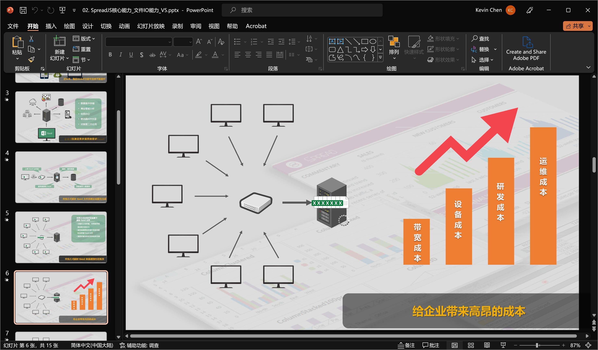
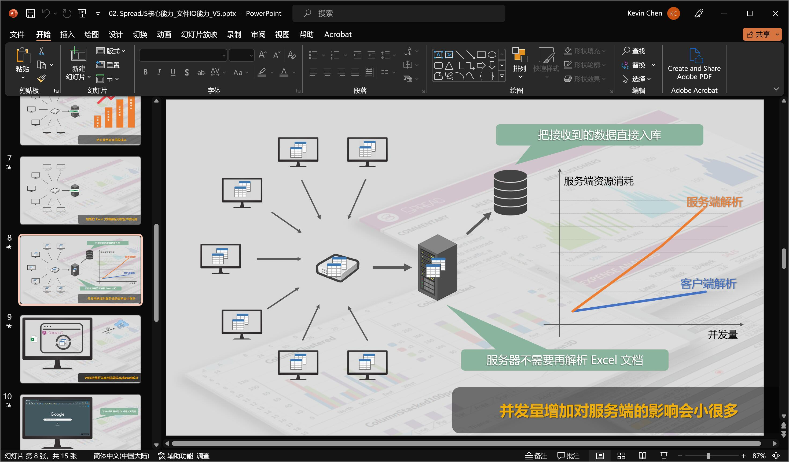
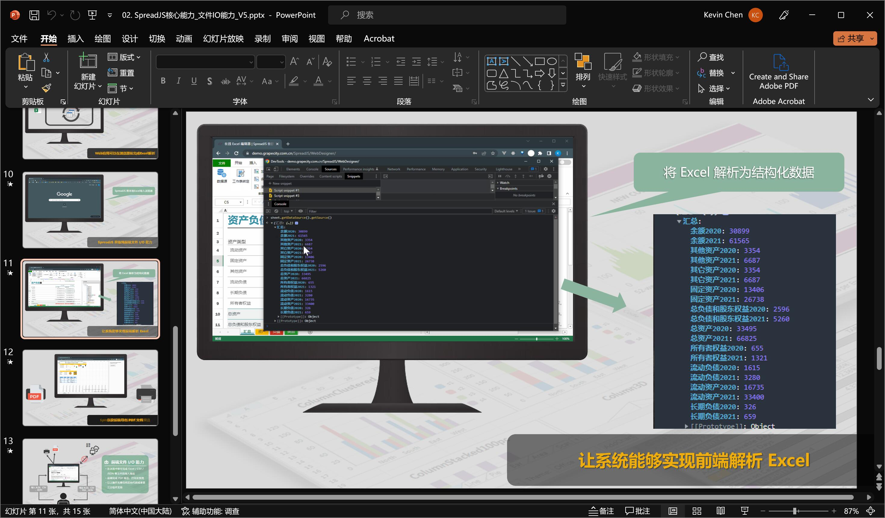
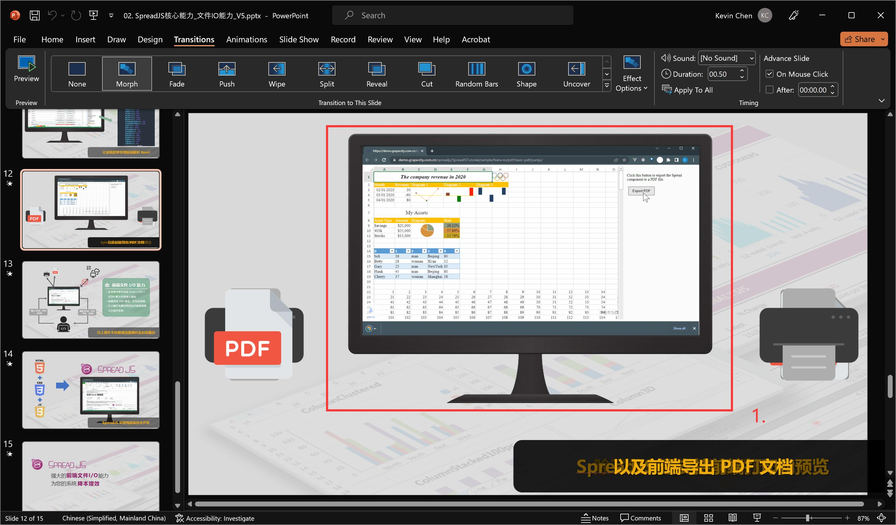
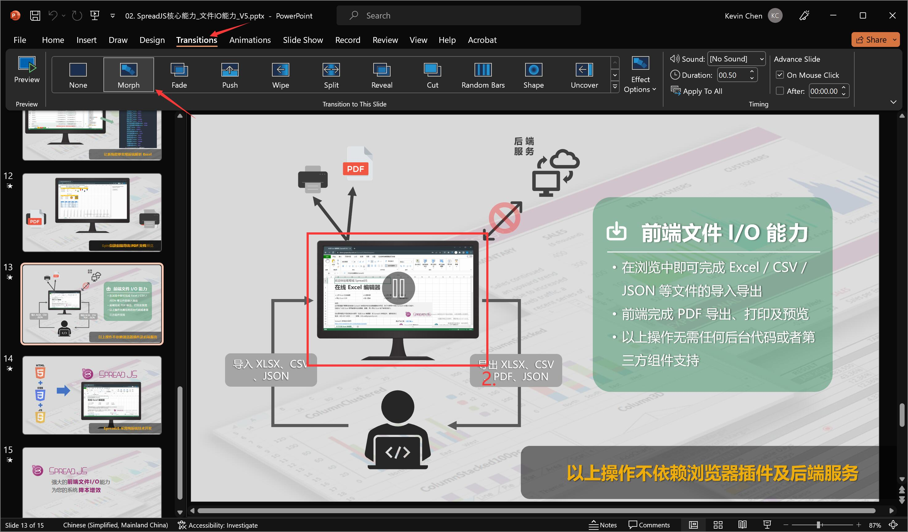
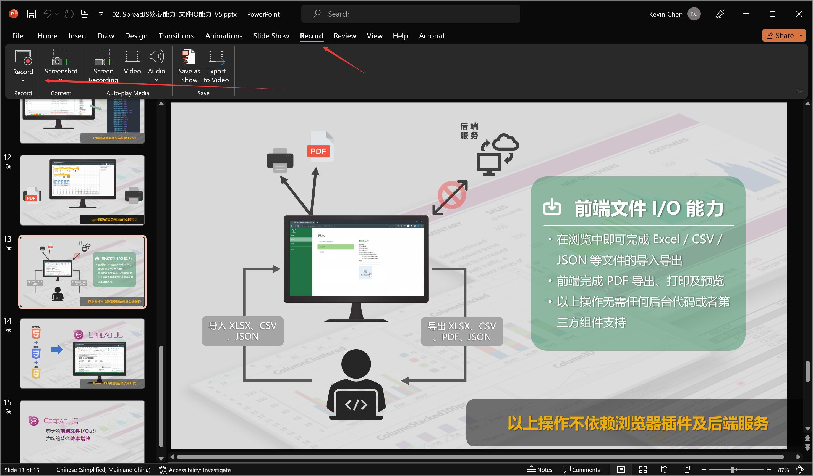

At the invitation of the marketing department, I began planning this series of short videos last December. The goal was to intuitively demonstrate the features and value of the product within 2 minutes, or even 1 minute. After nearly 2 months of struggle, I finally completed this project, which received positive market feedback. I hope the insights and experiences I share in this article will be helpful to readers.
Background
SpreadJS, as a cash cow product of GrapeCity, has enormous market potential. However, as a control, it also requires a relatively high technical capability from its users. Users who are initially exposed to the product often find it difficult to understand some concepts related to the product, thereby failing to comprehend the value the product can bring to their projects.
In order to accurately and vividly convey the concept, value, and application scenarios of the product to users - especially those without a technical background - I planned this strategy in collaboration with the marketing department. We already have many text and image promotions, but due to limited channels, and because reading technical content in text form requires a high demand on the customer’s time and energy, we decided to try showcasing the product through short videos. The purpose of this approach is twofold:
- To cover short video platforms, including WeChat video, TikTok, Kuaishou, Bilibili and other channels that we have not previously reached;
- To swiftly boost visitation rates, enabling users to easily understand the product, its value, and its applications in their spare time.
Ideas
From the above-mentioned needs, it is not difficult to deduce the objectives of this planning case:
**To create a vivid and intuitive video for each of the six major features of the product, each not exceeding two minutes in duration.**The requirements are as follows:
- Show the background of the corresponding feature, demonstrate the feature, and its value.
- Ensure the content is attractive, intuitive, coherent, and logically smooth.
Unlike a single video, this plan includes a complete set of six videos, each with clear objectives and requirements. Naturally, I needed a unified framework to ensure this. The issues that this framework needs to address include:
- Unified introduction and conclusion, background, watermark, and logo.
- Unified font style, colour scheme, materials, background music, as well as elements and transition animations
- Unified content framework, which includes:
- Describing the current situation and posing a problem - to create suspense
- Showcasing product features, as well as unique advantages
- Providing solutions, and scenarios from well-known customers
Although the first two points involve cooperation with designers, I need to come up with my own plan and confirm it promptly with the marketing department.
The most challenging part is the third point. It’s not easy to clearly express all these points within 2 minutes, let alone ensuring they are logically smooth and sufficiently attractive. The wise approach at this stage is to write a script first, identify the most core points and those that trouble users the most, then provide the most direct solutions, and design vivid demos and animation presentations. This is the only way to leave a deep impression.
Script
Current Situation and Problems
Each video has a corresponding product feature, and we must not forget that the purpose of video production is to promote the product more widely. Therefore, the first part has a focus: finding a pain point that is common among industry users, and the product’s features can provide a targeted solution.
For example: The demonstration video at the top of the article introduces such a problem: Excel’s ecosystem is powerful, but it is difficult to be compatible with modern web systems (although there are products like Google Docs, can you imagine allowing Ernst & Young’s actuaries to work with Google Docs?). The time and computational cost of forcefully parsing Excel documents in the back end is an expense that companies can hardly afford.
In this way, the first section spends 25 seconds explaining the performance bottleneck and cost pain points through a simple front-end and back-end architecture diagram.

Proposing a Solution
In response to the problem in the first part, an immediate assumption can be made: if all submitted Excel files are parsed in the front end and only structured data is submitted to the backend, this would avoid the bottleneck of server resources being consumed by the Excel parsing process under high concurrency scenarios.
In this part, you can try to explain the problem-solving approach through animations, charts, and concise text. Comparing it with the animation in the previous section can more intuitively illustrate the problem.

Introducing the Product
With a solution in place, naturally, there will be tools needed to implement the solution. At this point, you can very naturally introduce the product features. For example: SpreadJS can complete all Excel operations in the browser, including parsing Excel and extracting data, which allows us to implement the hypothesis of only submitting pure data to the backend.
Combined with a quick demo presentation, we can dispel the audience’s doubts in the most intuitive way.

At this point, the video has accomplished its target task in just 1 minute and 5 seconds. The remaining time can be used to expand on related features and provide a summary, preventing the video from ending too abruptly.
Production
I am not an expert in video production, so I don’t have any particularly exciting insights to share in this area. The main tools I used are:
PowerPoint: For creating video content, implementing animations, transitions, etc.
Tips: To switch between slides more coherently, you can retain a similar element in the two slides and then set the transition method for the slides, as shown in the diagram:

The two elements marked with red boxes 1 and 2 in the diagram are the same. By setting the transition animation in the manner of the arrow in the diagram below, a coherent visual effect can be achieved.
Utilize PowerPoint’s built-in screen recording feature for video recording.
Of course, you can use third-party screen recording software to achieve this, but I highly recommend PowerPoint’s built-in tool. It’s easy to use, doesn’t require opening a separate software process, and reduces the number of operational steps.

Conclusion
The series of videos were launched one after another within a month, achieving over 100,000 views and rapidly receiving a large amount of contact and feedback, which greatly exceeded our expectations. Despite many problems with the video content, it was still noticed by the general manager and featured on the official product website. If you are interested, you can click the following link to watch the remaining five videos:
- Pure Front-End, Cross-Platform Spreadsheets
- Industry-leading Compatibility with Excel
- Superior Rendering and Computation Capabilities
- Powerful Calculation Engine to Meet Data Analysis Needs Across Various Industries
- Combined with Server-side Components, Providing a Full-Stack Excel Solution for Systems